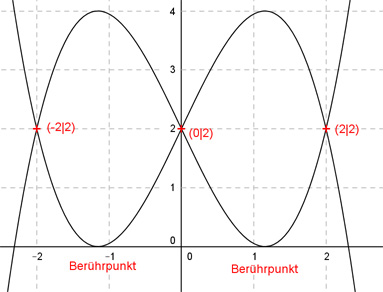

Aufgabe 60 Der Graph einer ganzrationalen Funktion 3. Grades geht durch die Punkte (-2|2), (0|2), (2|2) und berührt die x-Achse. Wie lautet seine Funktionsgleichung?  Allgemeine Form einer ganzrationalen Funktion 3. Grades: f(x) = ax3 + bx2 + cx + d f’(x) = 3ax2 + 2bx + c f’’(x) = 6ax + 2b 4 Bedingungen: 1. Geht durch den Punkt (-2|2) bedeutet: f(-2) = 2 --> a * (-2)3 + b * (-2)2 + c * (-2) + d = 2 --> -8a + 4b - 2c + d = 2 I 2. Geht durch den Punkt (0|2) bedeutet: f(0) = 2 --> a * 03 + b * 02 + c * 0 + d = 2 --> d = 2 3. Geht durch den Punkt (2|2) bedeutet: (d = 2 eingesetzt) f(2) = 2 --> a * 23 + b * 22 + c * 2 + 2 = 2 --> 8a + 4b + 2c + 2 = 2 |-2 8a + 4b + 2c = 0 II 4. Berührt die x-Achse bedeutet: f(x) = 0 und f’(x) = 0 I (d = 2 eingesetzt) + II -8a + 4b - 2c + 2 = 2 8a + 4b + 2c = 0 ---------------------- 8b + 2 = 2 |-2 8b = 0 |:8 b = 0 b = 0 in II eingesetzt: 8a + 2c = 0 |-8a 2c = -8a |:2 c = -4a 4. Bedingung f’(x) = 0 (c = -4a eingesetzt): 3ax2 - 4a = 0 |:a III 3x2 = 4 |:3 4 x2 = --- |√ 3 2 x1,2 = ± ---- √3 4. Bedingung: 2 2 f(----) = 0 oder f(- ----) = 0 √3 √3 (c = -4a eingesetzt): 2 f(----) = 0 --> √3 2 2 a1 * (----)3 - 4a1 * (----) + 2 = 0 √3 √3 8 8 -------- * a1 - ------ * a1 + 2 = 0 | * √3 3 * √3 √3 8 ---- a1 - 8a1 + 2 * √3 = 0 |-2 * √3 3 8 ---- a1 - 8a1 = -2 * √3 |*3 3 8a1 - 24a1 = -6 * √3 -16a1 = -6 * √3 |:-16 3 a1 = --- * √3 8 2 f(- ----) = 0 --> √3 2 2 a2 * (- ----)3 - 4a2 * (- ----) + 2 = 0 √3 √3 8 8 - -------- * a2 + ------ * a2 + 2 = 0 | * √3 3 * √3 √3 8 - ---- a2 + 8a2 + 2 * √3 = 0 |-2 * √3 3 8 - ---- a2 + 8a2 = -2 * √3 |*3 3 - 8a2 + 24a2 = -6 * √3 16a2 = -6 * √3 |:-16 3 a2 = - --- * √3 8 Gesuchte Funktionsgleichung: 3 3 f1(x) = --- √3 * x3 - 4 * --- √3 x + 2 = 8 8 f1(x) = 0,375 √3 * x3 - 1,5 * √3 x + 2 oder f2(x) = -0,375 √3 * x3 + 1,5 * √3 x + 2